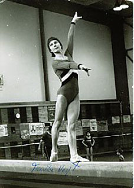

Franka Voigt (GDR)
1982 GDR B Champion
1981 World Championships Team Silver Medalist

Franka was born on August 2, 1963. She was coached by Helmut Schwarzbach at ASK Vorwaerts Club in Frankfurt Oder. Franka competed outside of the GDR for the first time in 1979, at a dual meet with Switzerland. A few months later she traveled to the world championships in Fort Worth, where she was the alternate. Because of her 7th place finish at the 1980 GDR Championships, Franka was not chosen to compete at the Moscow Olympics.
She competed at the 1981 European championships (where her beam routine featured a side somi and leg circles) and also at the 1981 world championships. An injury kept her off the 1983 GDR world team, but she won a silver medal with her team at the 1984 CSSR Spartakiade (Olomouc). Today Franka is married and lives in Berlin. Her daughter, Nancy, competes in sports acrobatics.
Competition Results
1977
DTV Jr. Challenge Cup: 1st Team, 1st AA
GDR Youth Spartakiade: 1st AA
Jr. Friendship Tournament (Druzhba): 4th Team, 7th AA
Jr. GDR Championships: 1st AA, 1st V, 1st FX, 2nd UB, 2nd B
Jr. USSR-GDR Dual Meet: 3rd AA
1979
SUI-GDR Dual Meet: 1st Team, 6th AA
1980
GDR Championships: 7th AA
GDR-HUN Dual Meet: 1st Team, 6th AA
GDR-NOR-SWE Tri-Meet: 1st Team, 3rd AA
1981
American Cup: 7th AA
Cottbus International: 3rd AA, 1st B
European Championships: 9th AA, 4th B
World Championships: 3rd Team, 39th AA (prelims)
1982
Catania Cup: 2nd AA
Ennia Gold Cup: 10th AA, 3rd UB, 4th FX
GDR Championships: 2nd AA, 1st B, 2nd UB
GDR Cup: 2nd AA
1983
American Cup: 7th AA
Cottbus Cup: 3rd AA, 2nd UB
European Championships: 13th AA
Moncada Cup: 1st AA
1984
CSSR Spartakiade (Olomouc): 2nd Team, 7th AA
GDR Championships: 4th AA, 2nd V
Moscow News: 12th AA, 3rd
This page was created on March 12, 2000 and was last updated on November 21, 2020.
© Gymn Forum